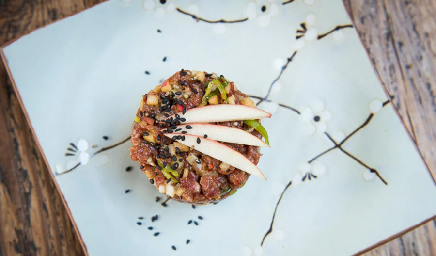

Asian-Steak-Tartare

Korean steak tartare or 'yukhoe' is a popular dish
throughout Korea. Beef is highly valued,
and many
restaurants can trace the cows' origins back to individual farms.
This recipe explains the difference between a Korean and French steak
tartare,
wich beef to use, and how to serve steak tartare.
Preperation time: 30 minutes
- Rump steak, cut into matchsticks or finely diced 200gr
- Spring onion finely sliced (green and white equal) 4 tbsp
- Apple diced (Pink Lady) 4 tbsp
- Cucumber diced 2 tbsp
- Ginger fresh minced 3 tsp
- Sesame seeds crushed in a pestle and mortar 2 tsp
- Korean red pepper powder 1 tsp
- Soy-Sauce 2 tbsp
- Sesame-oil 1 tbsp
- Chinkiang black vinegar 2 tsp
- Mustard 1/2 tsp
- Salt and freshly ground black pepper to season
- Apple sliced into batons
- Sesame seeds (black)
- Quail's egg yolk, raw per person 1 (optional)
- Crispbreads or toast to server with
- To make, mix together all the ingredients and taste
for seasoning.
- Press the mixture into a mousse ring, and gently
lift away.
- Garnish with sliced apple, sesame seeds, and an egg yolk (if using).
Serve with crips breads or toast.